3.2 Guitar plug female connectors
159
The hoopy looking thing on the left side of both
plugs is a great place to solder the shield/drain
wire. It ’s better not to crush it shut, as that makes
the plug hard to recycle. The right-hand plug
shows the drain soldered in place; the left-hand
plug shows the bare drain solder tab.
Figure 3.2.4 is just to give you an idea of
the dimensions involved. There ’s not a lot
of room inside one of these babies, so your
craftspersonship must be exemplary. Yeah, I know
that’s awkward – how about craftsoneship? Much, if
not most, of the world ’s wiring is done by women.
Wrap the wire fi rmly around your hand ( Figure
Figure 3.2.4 Dimensions.
3.2.5 ). This prevents the individual conductors
from being pulled out when they are stripped,
and is only needed on short lengths of wire. If the
wire is already harnessed or strain-reliefed, you
don’t have to wrap it around your hand.
In Figure 3.2.4 , we saw that the soldering end
of the plug was less than {3/4} inch. So with this
plug, we can cut back a little more than 1.25 inch
( Figure 3.2.6 ). We ’ re stripping back a little more
then we need to, so we can have some slack to
play with. As long as you have extra, the length is
not critical.
Figure 3.2.5 Wrap wire around hand.
Figure 3.2.6 Measure strip.
160
Audio Wiring Guide
Note that by placing my thumbnail at the point being measured, I can guide my stripping tool safely to the exact spot I want. This makes it easier to strip back an accurate distance each time.
The wire I ’ m using for this example is two-conductor shielded Mogami, one of the highest quality types available. Like many larger diameter wire types, it has a thick, rubbery outer jacket, which cuts more cleanly with a razor blade than with a pair of wire strippers ( Figure 3.2.7 ). However, should you prefer, stripping the outer jacket off with wire strippers is also fi ne.
Figure 3.2.7 Cut outer jacket with razor blade.
If using a blade, gently rock it at a right angle to the wire and then, using a light slicing motion, spin the blade around the wire, keeping it at a right angle at all times. This technique will create a super-clean cut of the outer jacket and, if done gently, will not harm the strands of the shield conductor that lie just inside the outer jacket.

3.2 Guitar plug female connectors
161
Gently bend the cut in all directions to break away any slivers of the outer jacket that still connect both sides ( Figure 3.2.8 ). If needed, cut the slivers lightly with the razor blade. The break should be complete on all sides.
Figure 3.2.8 Break open razor cut.
This particular wire is very supple, and the outer insulation jacket can just be pulled off ( Figure 3.2.9 ). One of my crude arrows helps illustrate the direction to pull. If the outer jacket is sticking to the shield, then you have to cut it lengthwise (see the details in Figure 3.1.8 ). I ’ m breaking my own rule about fl ipping – but this wire behaved itself and didn ’t need the additional cut.
Figure 3.2.9 Pull end off.

162
Audio Wiring Guide
This particular Mogami shield ( Figure 3.2.10 ) is not tinned and is loosely woven, so it ’s fl exible and easy to unbraid, unlike some other shields around here. I was good – I didn ’t press too hard with the razor blade – so none of the strands are broken.
Figure 3.2.10 Detail of shield.
Push back the shield conductor strands away from the exposed end ( Figure 3.2.11 ). This loosens the weave of the strands and makes them easier to unbraid.
Figure 3.2.11 Push shield conductor strands back.
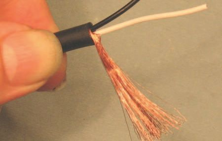
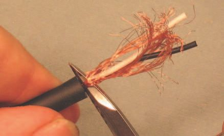
3.2 Guitar plug female connectors
163
Using any convenient small, pointy object, carefully unbraid the shield strands ( Figure 3.2.12 ). Do this one or two overlaps at a time; don ’t try to do a whole bunch at once – you ’ ll break strands. As you can see here, the awl blade on a Swiss Army knife is ideal for this operation.
Keep going, keep going – it won ’t take long. Work all the braiding out of the shield strands, right down to where they break out from the outer jacket ( Figure 3.2.13 ). This particular wire is very civilized, no fuzz, string, plastic wrapper, just the three conductors – nice! You might not be so lucky –
be prepared for a little clean-up. Trim all leftover insulation as tightly as possible, without harm to the conductors.
Figure 3.2.12 Unbraiding shield – 1.
Figure 3.2.13 Unbraiding shield – 2.
Hold the wire in your hand (or a vise) and smooth out the strands of shield so they lie fl at ( Figure 3.2.14 ). The goal is to make a thin, broad surface, to solder onto the strain relief. Think of a strip of paper lying limply – not a twisted rope, as one might be tempted to make.
Figure 3.2.14 Smoothing out shield.

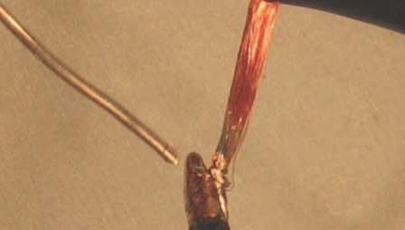
164
Audio Wiring Guide
Now that you ’ ve got those shield strands lying obediently fl at, you need a trick to keep them that way. At the end of the shield strands, twist them around each other in a circular motion ( Figure 3.2.15 ). This will leave the bulk of the strands lying fl at, and fl exible, but keep the whole bundle of strands together for soldering.
Figure 3.2.15 Twist shield at end.
Figure 3.2.16 is a fl y ’s eye view of the twist at the end of the shield. Now we need some way to keep it twisted – which brings us to Figure 3.2.17 .
Solder the shield conductors at the twisted point. Use only enough solder to keep the strands together at the twist. Don ’t let the solder run into the fl at portion you created – that would make the shield stiff, when we need it to be fl exible.
Figure 3.2.16 Twist shield detail.
Figure 3.2.17 Solder twist in shield.
3.2 Guitar plug female connectors
165
The next cuts are critical in length, so lay the wire against the connector to get a reality check on the needed length(s) ( Figure 3.2.18 ). It ’s common that the optimum length for the high and low conductors is
slightly different.
Figure 3.2.18 Sizing for cut-off.
In this case, both the white and black conductors are electrically identical.
So you can choose either one for the low or high, but you must be consistent! If black is high at one end of your cable, make darn sure it ’s high at the other end too. Electrical convention in AC wiring is that black is low, but you ’ re not bound by law to follow that – only to be consistent in your work.
I ’ ve laid a ruler against the work for comparison, but the plug itself is the place to determine measurements from, as each type will be slightly different.
If you ’ re wondering what that mystical ‘ optimum length ’ is, here are some guidelines:
● The shield conductor must be positioned so it can be wrapped over the strain relief arm or, in this case, inserted in a solder tab, past the
‘ U ’ -shaped yoke at the end, but not so close as to short out the high and low tabs.
166
Audio Wiring Guide
● The high and low conductors must go in a slight arc (curve) to their respective tabs, and be cut long, to allow enough stripped length for
insertion in the holes in the center of each solder tab. The reason to have a slight arc is to make the conductor able to fl ex under stress – not snap off at the solder point.
In this case, the high conductor length is {9/16} inch and the low conductor is {7/16} inch, but since connectors vary in length, so may your mileage.
Make sure the outer jacket of the wire is correctly positioned in the strain relief yoke. Look just to the right of my left thumbnail in Figure 3.2.19 to see what I mean. Then cut the high conductor just a tiny bit longer than you think is needed. It ’s easy to cut back more – but hard to replace once cut.
Figure 3.2.19 Cutting high conductor.
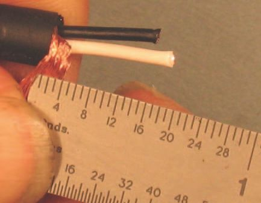
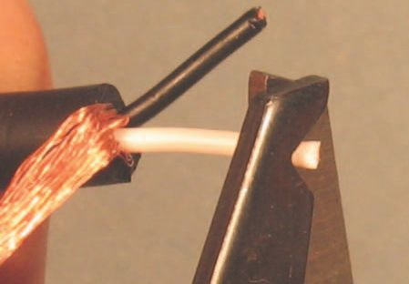

3.2 Guitar plug female connectors
167
Figure 3.2.20 Cutting low conductor.
Figure 3.2.21 Finished cut length.
We have the same situation in Figure 3.2.20 . Keep the outer jacket in position and cut the low conductor just a bit longer than you think is needed. Remember that arc we talked about a few shots back?
You can see from Figure 3.2.21 that I was telling the truth. The high conductor length really is {9/16} inch and the low conductor is {7/16} inch.
That’s what works for this particular connector, with this type of wire. Now for some stripping on the high and low conductors.
Strip both the high and low conductors back 1/16 inch ( Figures 3.2.22 and 3.2.23 ). Why such a small amount? Because the insulation on cable tends to shrink (or ‘ wick ’ ) back when the strands are heated to be tinned. You ’ ll see this in the next steps.
Figure 3.2.22 Stripping high conductor.
Figure 3.2.23 Stripping low conductor.

168
Audio Wiring Guide
The fi nished strip of both insulated conductors is shown in Figure 3.2.24 .
The black is stripped {1/16} inch, the white is just a hair longer – that ’s OK too.
Figure 3.2.24 Finished strip.
OK, I skipped a shot. I should have shown tinning the high conductor – but I got too excited. So imagine really hard that you saw me do it and look at the shot of me tinning the low conductor ( Figure 3.2.25 ).
Figure 3.2.25 Tin both conductors.
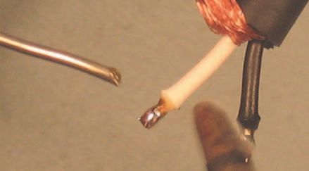
3.2 Guitar plug female connectors
169
We need to use a technique called ‘ beading ’ here, where the tinned ends of the conductors are loaded with extra solder. This forms (ideally) a
grape- or bead-like shape – hence the name. This technique is used where it is not possible to feed the solder onto the heated conductor. Instead, the conductor itself must carry the solder as a ‘ payload ’ .
The fi rst step in beading is to tin the end of the conductor. Sometimes it is possible to add the full payload of solder all at once. Often, however, it helps to let the tinning cool down and then add the beading (build-up) as a second step. Figures 3.2.26 and 3.2.27 show this process.
Figure 3.2.26 Beading high conductor – 1.
Figure 3.2.27 Beading high conductor – 2.

170
Audio Wiring Guide
I got lucky when I tinned the low conductor and got a good payload of
solder on it. It ’s more conical than grape shaped, but a small snip with my cutters will blunt the tip if needed. So in Figure 3.2.26 I ’ m loading up the high conductor with solder.
There ’s almost enough solder on the high conductor, so I ’ ll lightly add just a bit more here.
Our artfully beaded conductors are shown in Figure 3.2.28 . The conehead on the low will melt into position, and the bead on the high conductor is a perfect example of the technique.
Figure 3.2.28 Completed beading.
Figure 3.2.29 Putting on shell.
Since our next step is to solder the connector, we must put the outer metal shell and (if included) the inner plastic insulator onto the wire right now ( Figure 3.2.29 )! If this step is forgotten, you get to un solder the tabs and try again.
This plug didn ’t come with an inner insulator. Maybe you lost the inner insulator? Improvise – use a bit of electrical tape after the soldering is complete. Gaffer tape, Scotch tape, even paper – you must provide some form of insulation between the tabs and the outer metal shell, or it ’ ll be shorting time.
Put the wire and the outer shell aside for awhile. Time now to play with the connector.

3.2 Guitar plug female connectors
171
When it comes from the factory, the solder tabs are too close together –
likely to short out. I ’ m fl aring them out a bit in Figure 3.2.30 to get a tad more space. This is more visible in Figure 3.2.31 .
Figure 3.2.30 Flaring solder tabs – 1.
Figure 3.2.31 Flaring solder tabs – 2.
I put a bit of white tape across the strain relief yoke so you could see the fl ared solder tabs more clearly. As you can see, I only bent them a little bit. Just enough for some breathing room – and maybe a bit of mylar
electrical tape!
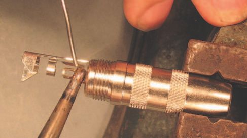
172
Audio Wiring Guide
Space is so tight inside the connector that I want to pre-tin the high and low conductor solder tabs. This way, when I bring the solder-laden conductor into position against the solder-encrusted tab, they will bond immediately when heated. That ’s the premise, at least. In Figure 3.2.32 , I ’ m tinning the high tab.
Figure 3.2.32 Tinning high tab.
Tin both tabs the same way – with a thick fi lm of solder. Enough to provide
‘ wetting ’ action against the solder on the conductors, but not so much as to drip down and short.
In Figure 3.2.33 notice how I ’ m bracing my hand against the vise to stabilize my solder feed? This is like the brace you take for shooting pool.
Figure 3.2.33 Tinning low tab.
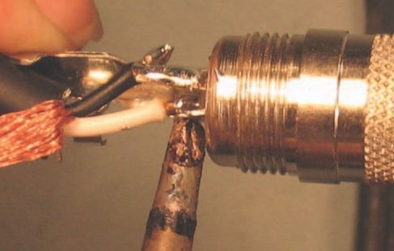
3.2 Guitar plug female connectors
173
Put the high conductor in position against the high conductor solder tab ( Figure 3.2.34 ). Grip the wire in such a way that you will not be burned when bringing the soldering iron into position.
Figure 3.2.34 Placing high conductor.
Press the iron ’s tip fi rmly against the solder tab for maximum heat transfer ( Figure 3.2.35 ). With thicker tabs, you may have to heat the solder on the conductor itself. Experiment, and see what works best for the connectors you have.
Figure 3.2.35 Soldering high conductor.
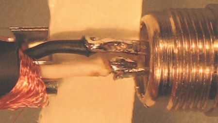
174
Audio Wiring Guide
Once the solder has melted, hold the iron in place for no more than 1–2
seconds and then remove it. Allow the solder to cool without moving the conductor.
Once the high conductor is in place, it ’s easier to do the low one. In Figure 3.2.36 I show the low one pushed into position and in the act of being soldered. It ’s the same drill as the high tab – heat until molten, remove the iron, and allow to cool without moving the conductor.
Figure 3.2.36 Soldering low conductor.
I ’ ve used that white tape again to clearly show the spacing of the fi nished conductors in Figure 3.2.37 . Notice that they are in no danger of shorting to each other, and both will still be a safe distance from the inside of the outer shell once it is screwed in place. By building it this way, the connector can be safely used with no additional insulation.
Figure 3.2.37 Completed conductors.

3.2 Guitar plug female connectors
175
Remember that hoopy thing I showed you in Figure 3.2.3 ? Now is the time to put the drain conductor in it. Make sure the outer jacket is shoved well forward against the clamping tabs at the end of the strain relief. In Figure 3.2.38 one of the tabs is above my thumbnail, the other is hidden by the outer jacket.
Figure 3.2.38 Placing drain/shield.
Pardon my blurry solder in Figure 3.2.39 – I was trying to move it along the tab. This is one place where you can be generous with solder, fi lling in all the nooks and crannies in the shield/drain conductor. Just don ’t get carried away and create dripping blobs of molten solder. Use enough to fi ll the drain cup completely, but no more.
Figure 3.2.39 Soldering drain tab.

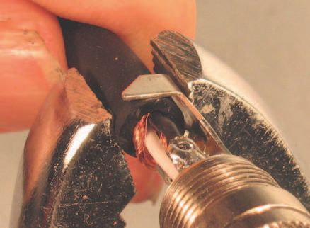
176
Audio Wiring Guide
Cut away the excess drain conductor ( Figure 3.2.40 ). File any sharp edges smooth.
The completed cut on the drain conductor is shown in Figure 3.2.41 . It ’s time now to compress the strain relief tabs.
Figure 3.2.40 Cut off excess drain – 1.
Figure 3.2.41 Cut off excess drain – 2.
Here, our goal is to crimp and curl the strain relief yoke tightly around the curve of the wire. So bend it a little at a time, and work it so as to press it into the outer jacket evenly at all points. We want an arc that matches the wire, so do one side at a time. Figure 3.2.42 shows the fi rst part of the crimp.
Figure 3.2.42 Crimping yoke – 1.
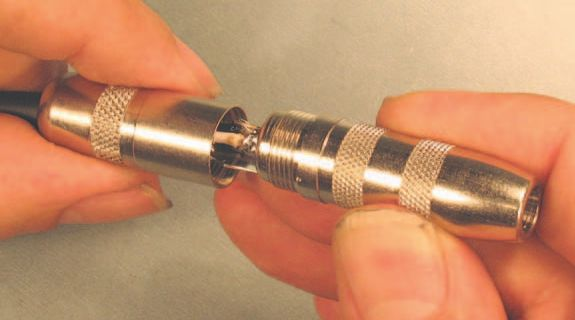
3.2 Guitar plug female connectors
177
The second half of the operation is illustrated in Figure 3.2.43 . We can see the curled yoke arm we just formed. Now we want to curl the other yoke arm over the outer jacket, making a very strong, secure strain relief.
Figure 3.2.43 Crimping yoke – 2.
If done right, this combination of the support from the yoke arms, along with the shield being soldered down, will make the strain relief as strong as the wire itself. Pretty cool, huh?
Screw the outer metal shell fi rmly into place ( Figure 3.2.44 ). And now for the very last step.
Figure 3.2.44 Screwing down outer shell.
178
Audio Wiring Guide
Figure 3.2.45 Spraying with ProGold.
Figure 3.2.45 shows the inside of the connector being sprayed with
enhancer. Wipe off any overspray. I ’ m using Caig ProGold G5 and
recommend that you do too! It prevents aerobic corrosion – which
degrades conductivity. It improves electrical contact on all metals used in electrical connections, and is especially good for low-power connections like guitar outputs and mating stage boxes. Most guitars have very low power output – down in the microvolt range.
At such a low level, any slight reduction in conductivity can be much more harmful than it would be at line level or speaker level. At higher power levels, the signal can cut through layers of (semi-conductive) corrosion.
Note: Caig Labs has recently changed the name from ProGold to DeoxIT
Gold. It ’s the same stuff. They also have some new products that are
interesting. More info about ProGold is on the Caig Labs website
(www.caig.com ).
That ’s it, folks. ‘ That ’s all she wrote ’ – or maybe I should say ‘ wired ’ . Now it’s time to whip out that VOM you bought after I suggested you do so in Section 1. If you really read the whole book, you ’ ll recall a mini-course in how to use it (the VOM) that was part of Section 2. You ’ ll even remember what VOM, or DVOM, stands for.
Test your work, check it for shorts and high-resistance solder points. If it all checks out, enjoy your new connections!
3.3
connectors
That ’s an awfully long name for such a small, short plug. For the sake of brevity (and mutual sanity), I ’ ll abbreviate it as MMGP. These miniature versions of a standard {1/4} inch guitar plug are a perfect example of a
‘ second generation ’ connector. And if I happen to mention an MFGP, that ’s the female of the species.
First came the regular guitar plugs – the kind you ’ d stick into your, uh, electric guitar or your synthesizer. They were OK for places where you had plenty of room. But what about the headphone jack on your Walkman? Or
the back of your computer for the audio ins and outs?
Nothing is ever 100% good – and the amazing, shrinking guitar plug was/is no exception. Its smaller size makes for a smaller electrical contact area, a more fragile connector, and one that ’s a lot more diffi cult to wire. The small size makes tolerances very tight for your work.
Despite this, it turned out that there were a lot of places where a smaller connector would work better. So, faster than you can say ‘ miniaturization ’ , a smaller version was created. In fact, two different types were (and are) made.
Just like their big {1/4} inch brothers, MMGPs come in mono (which is a high and shield conductor type) and stereo (which has a high conductor, a low conductor and the shield). The same applies for MFGPs.
My dilemma is to show you as much as possible in the minimum amount of time, text and pictures. So I ’ m going to show you the wiring sequence for a stereo MMGP here.
My assumption is that it ’s easier for you to forget something than it is for you to remember it, right? So if you have a stereo MMGP, just follow the sequence. If you have a mono MMGP, just omit the steps shown for the low conductor, as you will not have low, only high and shield, connections. In other words, the stereo has high/low/shield, but the mono version is only high/shield.
180
Audio Wiring Guide
I ’ m also going to economize and show you only an MMGP, but not an
MFGP, wiring sequence. Why? Other than the fact that I ’ m running out of room, the MFGP is not too commonly fi eld wired. Typically, you wire MMGPs to insert into MFGP jacks on equipment. Female jacks? Shouldn ’t they be jills? Maybe – but they ’ re not.
If you get stuck wiring an unlikely MFGP, look at the {1/4} inch version and mentally scale things down about 50%. Think small and delicate – that ’s half the battle.
To reinforce the above concepts, take a look at Figure 3.3.1 , and then we can get on to the actual wiring of the plug.
Figure 3.3.1 Solder tabs of a stereo plug.
The fi gure is a close-up of the two solder tabs on a stereo MMGP. I ’ve drawn two arrows to show exactly what part(s) I ’ m talking about. The longer part, which extends to the upper left in this picture, is both a strain relief for the wire and the part that the shield/drain gets soldered to. More on that later.
Let ’s call the two tabs I show the ‘ upper ’ and ‘ lower ’ tabs. Of course, if you turn the picture around, they would not remain so. But I have to differentiate them somehow.
The lower tab goes to the center of the plug and down to the tip of the plug. It ’s the high/hot conductor. The upper tab goes to the ring of a stereo plug, but is omitted (not present) in a mono plug. It ’s the low/cold conductor. As a general rule, tip is high, ring is low and the long barrel of the plug is used for drain/shield.
3.3 Mini-male guitar plug connectors
181
In Figure 3.3.1 you can also see the round black metal barrel of the MMGP. The especially aware reader will note the lack of an insulating
sleeve (typically plastic or paper), to go between the metal barrel and the equally conductive metal of the plug, and your solder points. The cause?
For some reason – poor design or packing error – this otherwise well-
designed MMGP did not come with an insulating sleeve. I ’ ll show you how to fi x that later on.
Small plugs need to be soldered with small wire. The thick, heavy insulation of the wire I used for the {1/4} inch guitar plug won ’t work here – there is no room, even for a genius-level wireperson. So I ’ ve chosen some smaller, two-conductor, foil-shielded wire to work with – typical studio installation wire.
It’s West Penn type 291 to be totally specifi c.
Spiral strand-shielded wire, like Mogami or Gotham, would also work well here. Braided strand-shielded wire is best avoided. It has excellent strength and shielding properties, but is very slow to work with, as the braid must be unwoven a few strands at a time.
Wrap the wire fi rmly around your hand ( Figure 3.3.2 ). This prevents the individual conductors from being pulled out when they are stripped, and is only needed on short lengths of wire. If the wire is already harnessed or strain-reliefed, you don ’t have to wrap it around your hand.
Figure 3.3.2 Wrap wire around hand.

182
Audio Wiring Guide
Measure the wire a convenient distance back. Figure 3.3.3 shows the wire being measured against a single-edge razor blade, which gives a length of about {3/4} inch, but any repeatable length up to about 1 inch will do. It is easier to dress the wire correctly if you strip it longer than needed and then cut off the excess.
Figure 3.3.3 Measure for strip-off.
Note that by placing my thumbnail at the point being measured, I can guide my stripping tool safely to the exact spot I want. This makes it easier to strip back an accurate distance each time.
Even though I used a razor blade to judge the length of the cutback, I ’ ll use a pair of strippers to cut the outer jacket insulation this time ( Figure 3.3.4 ).
Figure 3.3.4 Cutting outer jacket with strippers.
3.3 Mini-male guitar plug connectors
183
Both a razor blade and strippers work well. Use whichever one you ’ re most comfortable with.
This is the fi rst part of the strip-off procedure. Cut into the outer insulation jacket enough to score it deeply, but not so hard as to nick the inner conductors. This can be done by ‘ feel ’ after you ’ ve done a few dozen.
Even better, set the guide on the strippers to the exact depth needed, using scrap wire, before you start any real work. If you ’ re using strippers, I ’ m going to ask you to move them over to a part of the outer jacket closer to the edge, before pulling on the outer jacket to remove the stripped section.
This is shown in Figure 3.3.5 .
Figure 3.3.5 Removing the outer jacket.
Yikes! I moved too fast for Ken (my photographer) to catch me! What
you see here is the aftermath of a series of actions. I moved the jaws of the strippers over to the right, so they ’ re over an uncut part of the outer insulation jacket. By doing this, I avoid any risk of nicking or gouging the inner conductors.
Once the jaws were correctly positioned, I pulled on the section of outer jacket past the cut, to remove it (in the direction of the arrow). I got real lucky, and the inner foil shield came away cleanly at the same time (see the part in Section 1 on stripping wire).
Regrettably, despite my luck, I have to cut away more of the foil shield underneath the outer insulating jacket, to insure a clean connection.
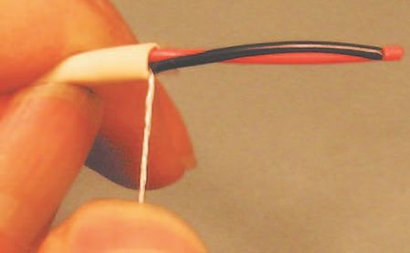
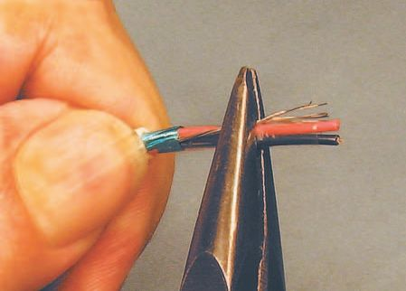
184
Audio Wiring Guide
Grasp the wire with one hand and gently pull
equally on all the exposed conductors with the
other ( Figure 3.3.6 ). Here, I ’ m using a pair of
needle-nose pliers that have smooth jaws to pull
with, but your fi ngers will work too.
Our goal here is to expose more of the shield –
maybe {1/8} inch – so that we can cut it away.
By doing this we can use the outer jacket as an
insulator and not have to deal with heat-shrinking
anything.
Nick the foil, either with a razor blade or a pair
of dykes. If you ’ re not sure what I mean, look at
Figure 3.3.6 Pulling back the outer jacket.
Figure 3.4.10 . I admit, I should have a shot here
of the ‘ nick ’ – but I forgot – and the picture in the
next section uses different colored wire, so I can ’t cheat and duplicate it.
Once you ’ ve started the tear, peel away the foil shield ( Figure 3.3.7 ). When done properly, the outer insulating jacket will snap back to overlap the breakout of the individual conductors and the remaining foil.
Figure 3.3.8 shows the wire with the foil properly trimmed to recess under the outer insulating jacket. No foil fragments or other insulation are visible, so there ’s no chance of a short or of contaminating a solder point. I ’ve also spiral-twisted the strands of the drain conductor, so they can be dealt with later.
Figure 3.3.7 Peeling away foil.
Figure 3.3.8 Completed basic strip.
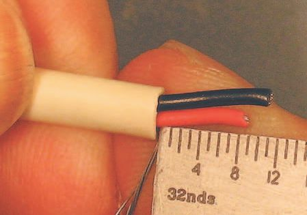
3.3 Mini-male guitar plug connectors
185
Figure 3.3.9 Wire against connector and ruler.
The wire is shown alongside the connector and a ruler in Figure 3.3.9 .
The (roughly) 1 inch strip-back leaves oodles of slack to wire the MMGP.
We ’ ll wind up using less than {1/3} inch of the stripped wire when we ’ re done, but the extra length makes it easier to work with.
Drat! I did it again – cut the darn conductors to length and forgot to take a shot of the actual cutting. Mea culpa. But you have a very vivid imagination, right? You can visualize the cruel,
sharp jaws of the dykes shearing away the excess
length, can ’t you?
The key thing to see here is that the high and low
conductors have been cut to different lengths
( Figure 3.3.10 ). The high (red) is about {9/32} inch
and the low (black) is around {11/32} inch.
Each make of MMGP is a slightly different shape,
so you ’ ll have to guesstimate for the MMGP
you ’ re using. The point is that the different
lengths need to match the dimensions of your
particular MMGP, whatever they may be. Longer
is better than shorter – you can always cut back.
Figure 3.3.10 High and low conductors cut to fi t.

186
Audio Wiring Guide
Strip the ends of the high and low conductors with a pair of wire strippers ( Figure 3.3.11 ). I gauge the distance by the width of the jaws of the hand stripper, which is about {3/32} inch. Yes, I know that ’s a tight tolerance, and no one will kill you if you err and make it {1/8} inch.
The reason to make such a short strip here is that we want to use a special soldering technique on the MMGP called ‘ beading ’ . In ‘ beading ’ we make a small blob (bead) of solder on the end of the conductor(s), and allow the conductor itself to carry the solder to the solder point (where the conductor and connector are joined). More on that later.
Figure 3.3.12 shows the completed strip on the high and low conductors.
As you can see, I ’ ve nailed the {3/32} inch strip length pretty darn well. So you can too – it just takes a little practice and a little patience.
Figure 3.3.11 Stripping conductor ends.
Figure 3.3.12 Stripped conductor ends.
Listen up, beading is a professional technique. It requires some delicacy, some practice, and very careful attention to safety details, if you don ’t want to get hurt.
Liquid solder fl ows rapidly and, in strict conformance with the Law of Gravity, it fl ows down – down onto your fi ngers, hand or leg if you ’ re not careful. So pay attention to where your body parts are when beading
conductors. Don ’t bead over your legs without a nice thick table in
between. Do wear safety glasses and don ’t wear your Bermuda shorts to a wiring session.

3.3 Mini-male guitar plug connectors
187
Having warned you, please pay close attention to Figure 3.3.13 – it contains a lot of information about beading techniques.
Notice the orientation of both the wire and the individual conductors.
Everything is pointing down toward the fl oor. Why? So our piping hot liquid solder will fl ow down toward the tip of the conductor. There, as it cools, it will form the round, blobby bead we want to create.
Any other orientation of the wire/conductors won ’t work. The molten solder will fl ow into unwanted places – maybe onto you –
and your spoken vocabulary of rude phrases will
be rapidly expanded.
In Figure 3.3.13 I ’ m applying the soldering iron
from underneath, but often the best approach
is to have all the elements – the conductor, the
solder and the iron – pointing down. Then the
feeble-minded liquid solder has nowhere to go
but down – down onto the tip of the conductor,
where we want it to go. Not sure what I mean?
Hold up the fi rst three fi ngers (no thumb) of either
hand toward the ceiling – like a mutant peace
sign – and you ’ ll get the concept.
It ’s also really important to pay attention to how
Figure 3.3.13 Beading the conductors – 1.
much solder you ’ re adding to the bead being
formed. Too little solder and the bead will not
have enough solder to bond properly. Too much
solder and you will either create a bead that is
too large or the solder will fall off in a wicked hot
droplet that will burn a nice little crater in your
leg. Sometimes, losing a few drops until you get
a proper bead is the only thing that works. So
always bead over that table I mentioned earlier.
The same applies to beading the second
conductor: some heat, just enough solder, and
move the iron gently away from the conductor, so
the molten solder will stay on the conductor and
not transfer over to the iron tip ( Figure 3.3.14 ).
Now, on to the fi nished product.
Figure 3.3.14 Beading the conductors – 2.
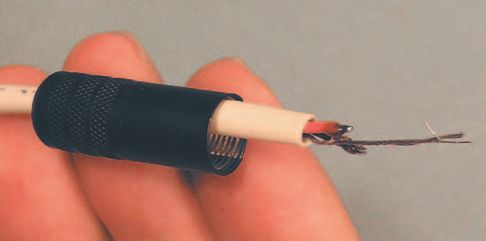
188
Audio Wiring Guide
Figure 3.3.15 shows the two conductors after beading. The black one has an optimal bead for our needs. The red one has a bead that ’s a little skinny, but still functional. Both beads are crusted over with fl ux – and this is (actually) a good thing. When reheated, the fl ux will help the solder on the conductor to meld with the tinning on the connector. Remember tinning?
Figure 3.3.15 Completed beading.
Since we ’ ll be attaching the wire to the connector next, now is the time to put the barrel over the wire ( Figure 3.3.16 ). Make sure it ’s oriented with its screw threads toward the tip of the connector. Make sure to insert any insulating sleeves included with the connector. Since our subject connector didn’t have a sleeve, we ’ ll have to make one at the right time.
Figure 3.3.16 Putting barrel on wire.
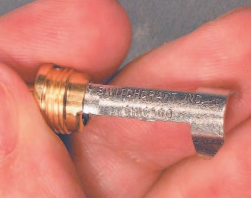

3.3 Mini-male guitar plug connectors
189
Put the wire and barrel aside for now. We need to
get delicately destructive. The particular MMGP
I ’ m using has a ‘ solder tab ’ for the drain wire. But
we don ’t need it, and it takes up space in our
cramped micro-environment.
So I ’ m cutting it away with a strong pair of fl ush-
cutting dykes ( Figure 3.3.17 ). Don ’t try this with
mini-dykes – you ’ ll break the tool. Shear the tab
(if there is one) away fl ush to the edge of the
strain relief arm. No tab? No problem! Just ignore
Figures 3.3.17 and 3.3.18 .
Figure 3.3.17 Cutting off solder tab.
Figure 3.3.18 Tab sheared away.
Figure 3.3.19 Tinning low solder tab.
Wow! My shearing cut was so close to the strain relief arm that I don ’t even have any sharp edges to clean up. If you are less fortunate, use a small fi le to smooth off any rough points. We don ’t want anything that will puncture the insulation of the sleeve we ’ re going to add – well, make, in this case.
Just as we beaded the conductors, we want to melt a careful amount of
solder onto the solder tabs and strain relief arm. See Figures 3.3.19 through 3.3.23. Then when the conductor and the solder tab are heated, the solder on both will meld into a physically strong and electrically conductive solder joint.

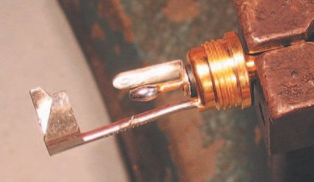
190
Audio Wiring Guide
If everything is done properly, this will happen quickly, with only 2–3
seconds of heating from the soldering iron. The correct amount of solder to add is a thick fi lm, or a slightly rounded, curved amount. We don ’t want an actual bead here, just enough solder for the bead on the conductor to bond with.
A correctly tinned low solder tab, ready for
connection, is shown in Figure 3.3.20 . Note the
slightly rounded appearance of the solder –
enough, but not too much. This is the low tab, but
we have to tin both tabs and the strain relief arm.
Which brings us to our next group of shots.
Tinning the high solder tab is the same as for the
low tab ( Figure 3.3.21 ). A little heat, a little solder
and, voila, a gently rounded tin job. Bright and
Figure 3.3.20
shiny, ready to bond.
Correct low tab tinning.
Figure 3.3.21 Tinning high solder tab.
Figure 3.3.22 Correct high tab tinning.
I ’ ve used a little more solder here ( Figure 3.3.22 ), giving a more rounded tin job than the one on the low tab. The reason for this is that the high tab is so small; we need more solder for physical strength. The low tab, being larger and broader, can have a thinner coating.
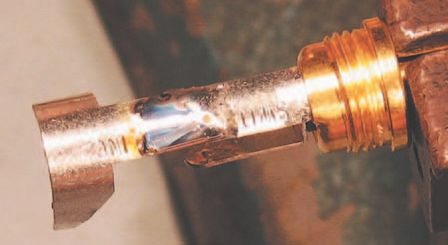
3.3 Mini-male guitar plug connectors
191
The third, and last, of our tinning operations is to tin the strain relief arm ( Figure 3.3.23 ), so that we can solder the drain/ground conductor to it easily. I ’ m going to create a fairly broad tinned area, but with a thin coating of solder. That way, no matter (almost) where the drain
conductor winds up being soldered, it will have a nice fi lm of solder to bond with.
Figure 3.3.23 Tinning strain relief arm.
Figure 3.3.24 illustrates the strain relief arm without the soldering iron, solder, and puffs of rosin smoke obscuring your view. Note the slightly rounded, bright, shiny appearance – exactly what we want the tinning to look like.
Figure 3.3.24 Correct tinning of strain relief.
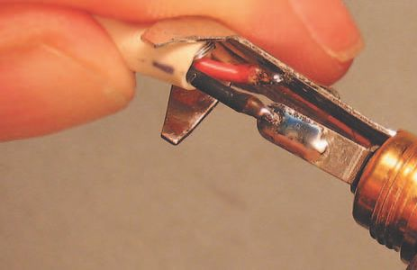

192
Audio Wiring Guide
Figure 3.3.25 Positioning low conductor bead.
Figure 3.3.26 Soldering low conductor.
In Figure 3.3.25 I ’ m laying the bead at the end of the low conductor over the tinned end of the MMGP ’s low solder tab. I ’ ll only get one shot at soldering it in place, without having to re-bead and/or re-tin, so correct physical orientation of the components is critical. Once everything is properly aligned, a quick touch of the soldering iron and the solder fl ows together from the bead onto the tab; the joint is complete. This is shown in Figures 3.3.26 and 3.3.27 .
Press down fi rmly but gently on the solder bead. It will take (typically) no more than 2–3 seconds for the solder to heat up
and meld between the conductor and the tab.
While keeping the wire totally motionless, pull
the iron quickly away and wait 5–10 seconds for
the molten solder to cool. Any movement of
the conductor or connector during this cooling
period will degrade the connection.
See how nicely the low conductor and the solder
tab have been joined? The solder has fl owed
into a smooth, shiny, slightly rounded dome that
provides excellent conductivity and a durable,
physically strong connection. Even better, once
the fi rst solder joint is made, the conductors
and connector become self-supporting and self-
aligning, making the following solder joints easier
Figure 3.3.27 Finished low conductor joint.
to create. Aren ’t you happy?
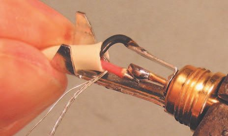
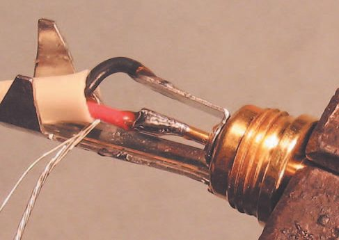
3.3 Mini-male guitar plug connectors
193
Figure 3.3.28 Positioning high conductor bead.
Figure 3.3.29 Soldering high conductor.
Just as we did with the low conductor bead,
align the high conductor bead carefully over
the high solder tab ( Figure 3.3.28 ). Since the
high tab is so small, we ’ ll lay the iron across
both the tab and bead, to heat both equally,
as we see in Figure 3.3.29 .
Just as described above, heat the high
conductor bead and the high tab at the
same time. The same instructions apply as
those for soldering the low tab. Press down
fi rmly but gently on the solder bead (and,
in this case, on the tab as well). It will take
(typically) no more then 2–3 seconds for the
solder to heat up and meld between the
conductor and the tab. While keeping the
Figure 3.3.30 Finished high conductor joint.
wire totally motionless, pull the iron quickly
away and wait 5–10 seconds for the molten solder to cool. Any movement of the conductor or connector during this cooling period will degrade the connection.
Again, you can see the well-formed shape of the fi nished solder joint ( Figure 3.3.30 ). Rounded, smooth, shiny, and with enough solder to provide good physical strength. With both the high and low conductors in place, we have only to solder the drain conductor. But its strands have become untwisted and frazzled. We have to retwist them fi rst.

194
Audio Wiring Guide
I ’ m (re)twisting the drain conductor strands, and also putting the wire into position within the yoke of the strain relief arm ( Figure 3.3.31 ). I want the outer insulation jacket to be as close as possible to the inner surface of the yoke, but not touching it. Why? Because the strain relief arm will become very hot when the drain conductor is soldered. If the insulation jacket is in contact with it, the insulation may be melted away. Not cool (literally).
We need to make a weight to hang off the drain strands, one that will keep them in position for soldering. Figure 3.3.32 shows a pair of pliers with a rubber band for some clamping action – easy to improvise.
Figure 3.3.31 Twisting drain conductor strands.
Figure 3.3.32 Create weight for drain.
You can use anything that has suffi cient weight to pull down on the drain strands – hemostatic forceps, pliers or an old fi shing sinker. Be creative – the point where the weight is attached will be cut off the drain strands after soldering anyway.
3.3 Mini-male guitar plug connectors
195
The truly perspicacious reader will note that I ’ m saying ‘ drain ’ here, and I used the term ‘ shield ’ when talking about the same operation for the full-size {1/4} inch guitar plug. Why? For the {1/4} inch plug, drain and shield were the same thing, because of the type of wire we were using. Here,
we ’ re using a different kind of wire – with that mylar shield, remember? So the mylar is the shield, and the strands of the drain conductor – which are in electrical contact with the mylar along its entire length – are the drain. I hope you don ’t fi nd these minor distinctions too, ah, draining.
I ’ ve rotated the connector in the vise so the strain relief is facing upward.
Next, I wrapped the drain strands tightly over the arm of the strain relief and clamped the jaws of the pliers on them.
Our weight here is the pair of pliers hanging off the drain strands. See how tightly the strands are wrapped across the strain relief arm in Figure 3.3.33 ?
Figure 3.3.33 Drain and weight in position.
Also note that the wire has fallen away from the yoke, which is a good thing – that way, the yoke won ’t melt the outer jacket when we solder. All is in position for the last solder point to be done.
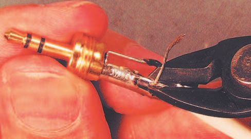
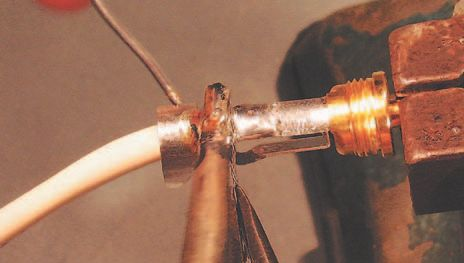
196
Audio Wiring Guide
Figure 3.3.35 Correct soldering of drain.
Figure 3.3.34 Soldering drain strands.
Press fi rmly down with the tip of the iron for maximum heat transfer ( Figure 3.3.34 ). Be liberal with the amount of solder you run in; here we want to fi ll all the voids in the drain strands, so they and the arm of the strain relief become one piece of metal. Just don ’t use so much solder as to cause
blobs to appear on the drain strands.
See the rounding of the solder on the drain strands in Figure 3.3.35 ? There ’s enough solder to give us our desired electrical and physical properties, but not so much as to cause problems later. Now we have to remove the excess drain strands past the solder point.
Use dykes to cut away the excess drain strands ( Figure 3.3.36 ). Cut as close as possible to the arm of the strain relief. Also cut at an angle, so the cut edge is beveled (angled) in relation to the strain relief arm. It gives you less to fi le down. I got lucky and my beveled cut gave me a nice, smooth edge.
If you ’ re less fortunate, fi le away, but do it carefully.
Figure 3.3.36 Removing excess drain strands.
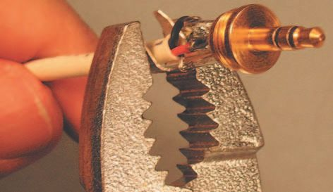


3.3 Mini-male guitar plug connectors
197
Figure 3.3.38 Clamping yoke onto wire – 2.
Figure 3.3.37 Clamping yoke onto wire – 1.
Using any heavy duty pair of pliers, bend one arm of the strain relief yoke around the wire ( Figure 3.3.37 ). Work slowly to form the arm into an arc.
The goal is to immobilize the wire without crushing or deforming it, so just a slight amount of compression is the desired amount.
Figure 3.3.38 shows the desired curvature of the yoke arm and the optimal amount of compression. Once the fi rst arm is formed correctly, we can do the same operation on the other arm – as shown in Figure 3.3.39 .
Do the same action on the other yoke arm. Wrap it fi rmly but gently around the wire, letting it overlap (curl around) the fi rst yoke arm. I ’ m showing this action is such detail because if you get overenthusiastic, and apply too much force, you ’ ll crush the conductors, create a short and have to do the whole connector all over again. That ’s very boring, so be careful.
A perfectly formed yoke is illustrated in Figure 3.3.40 , showing the right amount of compression and the correct curvature. It ’s not really that hard to do, and after you ’ ve done a half dozen connectors you ’ ll wonder why you ever thought it was diffi cult.
Figure 3.3.39 Clamping yoke onto wire – 3.
Figure 3.3.40 Correctly formed yoke.
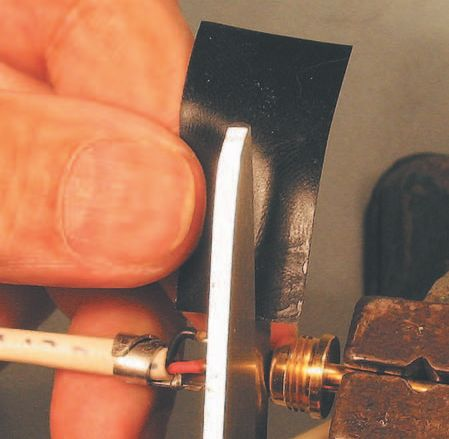
198
Audio Wiring Guide
Figure 3.3.41 Electrical tape for insulation.
Figure 3.3.42 Cut tape width to fi t MMGP.
Remember when we started working on this MMGP? I found there was no
insulating sleeve included with this particular connector. But we need to create some kind of insulation between the (metal) outer barrel and the conductors/solder tabs inside. Electrical tape works nicely for this purpose ( Figure 3.3.41 ).
In an emergency, you could use Scotch tape, masking tape, gaffer tape, even a band-aid, or paper wrapped around the solder tabs. But you must use something to avoid potential shorting of the tabs to the barrel. All of this is moot if you have an MMGP with a plastic barrel – but those break easily and don ’t provide the RF shielding of a metal barrel. So try and use metal barrel connectors – it ’s worth the extra work.
I ’ ll use a couple of inches of electrical tape – it ’s the best of the alternatives at hand. To do so, I ’ ll pull back about 2 inches of tape and cut it off the roll, for easy handling. Length is not critical here; anything longer than an inch and a half is fi ne.
Whoops, the width of the electrical tape is too wide to fi t into the space in the MMGP. No problem, just cut away the excess ( Figure 3.3.42 ); you can do this by eye, as the amount needed is not too critical.


3.3 Mini-male guitar plug connectors
199
Next we need to wrap tape around the solder
tabs ( Figure 3.3.43 ). This is a little tricky to
explain, but pretty simple to actually do. I ’ ve
poked the tape into the MMGP, so it passes
between the high solder tab and the strain
relief arm. Then I pulled the tape through and
curled it around so a layer lies between the
high and low solder tabs. If you can imagine
the cross-section of the tape being shaped
like the number ‘ 9 ’ , with the low tab inside
the closed part of the ‘ 9 ’ and the high tab
resting in the open part of the ‘ 9 ’ . I ’ ll take the
‘ tail ’ (open part) of the ‘ 9 ’ and wrap it around
both the other layers and the strain relief arm
itself.
Figure 3.3.43 Wrap tape around solder tabs.
When this is all done, there will be at least
one layer of tape between each of the solder
tabs, and anything else, along with a couple of
layers wrapped around the outside. No more is
necessary and would actually hinder screwing the
outer barrel into position.
The completed tape wrap is shown in Figure
3.3.44 . There is enough to insulate, but not so
much as to prevent the outer barrel being put
in place. And isn ’t it nice that you now know a
Figure 3.3.44 Tape wrap completed.
technique for insulating the solder tabs when
the factory-supplied insulating sleeve is missing?
Show this trick to someone assembling MMGPs
and they might call you a star wireperson, maybe
even a ‘ wrap ’ star!
Slide the outer barrel down and screw it
home. With any luck, your completed MMGP
connector will look very similar to the one in
Figure 3.3.45 , and work properly for a long, long
time. But there ’s one fi nal step left to ensure such
longevity.
Figure 3.3.45 Completed MMGP.
200
Audio Wiring Guide
Figure 3.3.46 shows the tip, ring and sleeve being sprayed with an
electrical enhancer. I ’ m using Caig ProGold G5 and recommend that you do too! It prevents aerobic corrosion – which degrades conductivity. This is especially important when using miniature connectors, as the contact area is so small.
Figure 3.3.46 Spraying with ProGold.
ProGold improves electrical contact on all metals used in electrical
connections, and is especially good for low-power connections. At low
levels, any slight reduction in conductivity can be much more harmful than it would be at line level or speaker level. At higher power levels, the signal can cut through layers of (semi-conductive) corrosion.
3.3 Mini-male guitar plug connectors
201
Note: Caig Labs has recently changed the name from ProGold to
DeoxIT Gold. It ’s the same stuff. They also have some new products
that are interesting. More info about ProGold is on the Caig Labs website (www.caig.com ).
That ’s it, folks. ‘ That ’s all she wrote ’ – or maybe I should say ‘ wired ’ . Now it’s time to whip out that VOM you bought after I suggested you do so in Section 1. If you really read the whole book, you ’ ll recall a mini-course in how to use it (the VOM) that was part of Section 2. You ’ ll even remember what VOM, or DVOM, stands for.
Test your work, check it for shorts and high-resistance solder points. If it all checks out, enjoy your new connections!
RCA male connectors
3.4
The RCA connector was designed and popularized by (who else) the
Radio Corporation of America – hence the name. Back in the 1940s and
1950s home hi-fi equipment was a new fi eld, and there weren ’t too many standards or equipment makers.
So when RCA needed a small, low-cost connector for the equipment
they were manufacturing, there wasn ’t anything currently on the market that quite fi tted their needs. They designed a new plug and it became an industry standard.
RCA connectors are strictly for unbalanced wire runs, i.e. one-conductor shielded wire. You ’ ll see them on stereo gear, home theater components, semi-pro and pro audio and video gear, and that dying class of equipment: turntables for vinyl records. You ’ ll never see a balanced RCA connector –
they don ’t exist. They have tip and shield only; never tip, ring and shield, like a stereo guitar plug. Hot and low/shield only, got it?
The signals entrusted to these humble connectors are as varied as their locations. An RCA may carry audio, video or digital information. It can do so at very low voltage and current – like the output of a turntable cartridge.
Or it may carry medium-level signals, either audio or video. Some digital equipment also uses RCAs for input/output.
You ’ ll seldom see RCAs used for speaker-level (high-level) connections, and for good reason. It ’s a wimpy connector, not designed to take high power levels or physical abuse. The main exception to this rule is in computer-type speakers, where the speakers themselves have a built-in amplifi er. You may then see RCAs on the speaker(s) for the input from a computer ’s sound card, or another line-level device.
Now that I ’ ve thoroughly bad-mouthed these poor connectors, let ’s look at one in the fl esh, or rather in the metal. Good quality RCAs have a metal outer barrel, not a plastic one! Don ’t use RCAs with a plastic outer barrel, except as a last resort; they don ’t provide the shielding of a metal barrel.


3.4 RCA male connectors
203
The RCA shown in Figure 3.4.1 is made by Canare; it ’s got a metal barrel and a built-in strain relief for the wire. Not all RCAs are so evolved; if you work on early gear, you may see much more primitive versions. Let ’s see how we get ready to wire this little puppy!
Figure 3.4.1 Male RCA.
Wrap the wire fi rmly around your hand ( Figure 3.4.2 ). This prevents the individual conductors from being pulled out when they are stripped, and is only needed on short lengths of wire. If the wire is already harnessed or strain-reliefed, you don ’t have to wrap it around your hand.
Measure the wire a convenient distance back. Figure 3.4.3 shows the wire measured against a single-edge razor blade, which gives a length of {3/4}
inch, but any repeatable length up to about 1 inch will do. It is easier to dress the wire correctly if you strip it longer than needed and then cut off the excess.
Figure 3.4.2 Wrap wire around hand.
Figure 3.4.3 Measure for strip-off.

204
Audio Wiring Guide
Figure 3.4.4 Cutting outer jacket with strippers.
Note that by placing my thumbnail at the point being measured, I can
guide my stripping tool safely to the exact spot I want. This makes it easier to strip back an accurate distance each time.
The fi rst part of the strip-off procedure is to cut into the outer insulation jacket enough to score it deeply, but not so hard as to nick the inner conductors ( Figure 3.4.4 ). This can be done by ‘ feel ’ after you ’ ve done a few dozen.
Even better, set the guide on the strippers to the exact depth needed using scrap wire, before you start any real work. If you ’ re using strippers, I ’ m going to ask you to move them over to a part of the outer jacket closer to the edge, before pulling on the outer jacket to remove the stripped section.
This is shown in Figure 3.4.5 .
Figure 3.4.5 Removing outer jacket.
3.4 RCA male connectors
205
I ’ ve moved the jaws of the strippers over to the right, so they ’ re over an uncut part of the outer insulation jacket. By doing this, I avoid any risk of nicking or gouging the inner conductors. Once the jaws are correctly positioned, pull on the section of outer jacket past the cut, to remove it.
See the part in Section 1 on stripping wire.
Figure 3.4.6 shows the other way to strip the outer jacket – with a razor blade. OK, I admit it, you can ’t see the wire in this shot. But it ’s there, and the razor blade is touching the wire right at the point where the center of my left thumbnail is resting on the outer jacket. I added the arrow to inspire your imagination as to the placement of the wire.
Figure 3.4.6 Cutting outer jacket with razor blade.
Strip the outer jacket off the wire with a pair of wire strippers ( Figures 3.4.4
and 3.4.5 ) or use a razor blade ( Figure 3.4.6 ) and gently cut around the insulation in a circular motion. If you ’ ve made the cut properly with a razor blade, you can pull the cut piece of outer jacket insulation off with your fi ngers.
When you are holding the wire correctly, your thumbnail will act as a safe and reliable guide, for the stripper or razor blade to meet the wire. I ’m right-handed, so I use my right hand for the tool and left hand for the work (wire).
If you are left-handed, just use your left hand for the tool and your right hand to hold the work.

206
Audio Wiring Guide
Figure 3.4.7 Nicking the foil.
Figure 3.4.7 shows the edge of the foil being nicked with a pair of dykes, so it can be removed cleanly. The same action can be done by slicing the foil gently with a razor blade.
It ’s helpful to grasp the blue mylar foil in one hand, the outer jacket in the other hand, and pull down the outer jacket so that more foil is exposed.
Then nick the foil about {1/8} to {1/4} inch past the cut-off point of the outer jacket. When you release the outer jacket it will snap back, overlapping the foil cut and hiding any rough edges.
Pull on the foil where you nicked it and it will come away cleanly, exposing the wires ( Figure 3.4.8 ). Clean up any rough edges by cutting them with dykes, and gently stretch the outer jacket back over the foil cut-off.
Figure 3.4.8 Removing the foil.
3.4 RCA male connectors
207
Pull on all three conductors to expose more shield ( Figure 3.4.9 ). This is the fi rst step in preparing a balanced wire for use with an unbalanced connector.
An RCA connector has only high (often red) and shield/drain; there is no low (often black) conductor. Other color combinations are also frequently used.
Figure 3.4.9 Expose more shield.
The question arises what to do with the unused low (black) conductor.
For various esoteric reasons, I recommend ruthlessly cutting back the low conductor, not ‘ doubling up ’ low and drain.
The only exception to this is when the drain is only connected at one end.
In that case, black and drain are connected at one end, but only black is connected at the other end. The drain then serves as an electrostatic shield, but not as a low-side conductor.
In most cases, RCAs are wired with one-conductor shielded (unbalanced) wire, so there is no low conductor to deal with. I show this method of using balanced wire on the assumption that it ’s easier for you to forget something than it is for you to remember it. Got balanced wire? Do what you see here.
Got unbalanced wire? Take that low conductor and forget about it!
Once you are familiar with the construction of RCA connectors, and the specifi c type you ’ re working with, the steps shown in Figures 3.4.8, 3.4.9
and 3.4.10 may be combined into one operation. I ’ m asking you to start by doing the work in discrete stages, so you can learn to do it accurately.
208
Audio Wiring Guide
Nick the foil as before, just a little further back on the wire ( Figure 3.4.10 ).
Then tear the foil off where you nicked it. And no, I ’ m not going to show you the step of tearing off the foil again. I ’ m leaving that to your febrile imagination. Instead, I ’ ll show you what to do after you ’ ve torn off the foil a second time and there are little nubbins of exposed foil left over.
Figure 3.4.10 Nick foil again.
Carefully cut away those pesky nubbins of foil shield (if any) that are left after you ’ ve removed about {1/8} inch more of the foil ( Figure 3.4.11 ). Be very careful not to cut, or nick, either the hot or drain conductor when you do this.
Figure 3.4.11 Remove foil scraps.

3.4 RCA male connectors
209
Cut off the low conductor as close to the breakout from the outer jacket as possible ( Figure 3.4.12 ). Our goal is to have only the high and drain conductor exposed.
Figure 3.4.12 Remove low conductor.
Grasp the wire fi rmly in both hands. Stretch the outer jacket back toward the exposed conductors ( Figure 3.4.13 ). This will create an overlap of the outer jacket, past the point where the foil and low conductor were cut away. By making this small insulating overlap, we reduce the risk of ‘ shorts ’
in the wire.
Figure 3.4.13 Stretch outer jacket back.

210
Audio Wiring Guide
Figure 3.4.14 illustrates our spiffy dressed wire – no sign of foil or low conductor. Nice. We are now ready for the next steps.
Figure 3.4.14 Ready for connection.
If you haven ’t wired many connectors, it ’s useful to hold the stripped wire against the connector to be soldered ( Figure 3.4.15 ). This gives a hard-core reality check about how long the fi nal length needs to be. When you ’ re working from measurements, or have a clear understanding of the length needed, you can omit this step.
Figure 3.4.16 High conductor cut to length.
Figure 3.4.15 Length check by eye.
As can be seen in Figure 3.4.16 , the high conductor has been cut to a tasteful {13/32} inch length. That ’s a really nice length for this particular Canare brand RCA, but there are literally dozens of different makers
of RCAs. All these different models will have slightly different length requirements.
3.4 RCA male connectors
211
Use your eyes, use your rulers. Most of all, use your common sense. I can ’t possibly show all the variations – this book would be a bulky, unportable encyclopedia, and you ’ d likely drop it on your foot.
Strip the ends of the high conductor with a pair of wire strippers ( Figure 3.4.17 ). I gauge the distance by the width of the jaws of the hand stripper, which is about {3/32} inch. If necessary, twist the strands of the hot and drain conductor (separately), so they will stay in place to be soldered.
Figure 3.4.17 Stripping high conductor.
The fi nished strip-off is illustrated in Figure 3.4.18 , showing {3/32} inch of exposed high conductor. This exposed length will increase when the
conductor is tinned. The insulation melts back when heated – this is called
‘ wicking ’ , or sometimes ‘ wickback ’ . Think of a candle ’s wick and you ’ ll see the origin of the term.
Figure 3.4.18 Finished strip length.

212
Audio Wiring Guide
Speaking of tinning, wicking and suchlike, that ’s exactly what we ’ re doing here. Tin only the high conductor ( Figure 3.4.19 ). Do not tin the drain conductor – that would make it stiff and infl exible.
Figure 3.4.19 Tinning high conductor.
Putting a barrel on the wire is a very important step ( Figure 3.4.20 )! If you forget it, you ’ ll have to un solder the wires from the connector, put the metal barrel onto the wire, and then re -solder the wires to the connector. Boring.
So get it right the fi rst time.
Figure 3.4.20 Putting barrel on wire.
3.4 RCA male connectors
213
Put the wire carefully aside. Mount the connector in a vise and tin the high (tip) solder cup ( Figure 3.4.21 ). Fill it (almost) full with happy, molten solder, but don ’t get too enthusiastic – a gently brimming spoonful, right?
Figure 3.4.21 Tinning connector – 1.
The tinned high cup is shown in Figure 3.4.22 , without the iron ’s tip obscuring the view. There is just enough solder. It ’s bright, shiny and smooth. Nice.
Figure 3.4.22 Tinning connector – 2.
214
Audio Wiring Guide
Rotate the connector 180 degrees, so the back (yoke) is facing you. Tin the middle of the yoke ( Figure 3.4.23 ). Slide the iron ’s tip along and keep adding dabs of solder until most of the yoke is nicely tinned. This allows the drain wire to be wrapped in a variety of positions and still lie on a tinned surface.
Figure 3.4.23 Tinning connector – 3.
Hurray! We fi nally get to attach the conductors ( Figure 3.4.24 ). Heat the high solder cup on its top; heating will be too slow if you try from the bottom. When the solder is molten, quickly (but gently) slide the wire into the cup. Then gently slide the iron horizontally off – in this case, to the right – while holding the wire in place until the solder cools.
Figure 3.4.24 Attaching high conductor.
3.4 RCA male connectors
215
The completed high conductor is shown in Figure 3.4.25 . Note that there are no exposed strands on the high conductor; the insulation is fl ush to the solder cup. Our careful measurement has resulted in a bit of the outer jacket protruding past the strain relief at the leftmost side of the connector. This is a good thing – when the strain relief is crushed down, the protruding outer jacket will add strength. Just wait and see.
Figure 3.4.25 Completed high conductor.
When you create a way to hold something in position that you ’ re working on, that holding-in-place device is called a ‘ jig ’ . It ’s a way to position the work that makes dealing with it faster.
216
Audio Wiring Guide
Here, by adding a rubber band to my pliers, we make a clamping action
tool, one that ’s heavy enough to weigh down the drain conductor and
keep it in position to be soldered ( Figure 3.4.26 ). Thus, the vise holding the connector, and the pliers pulling down on the drain conductor,
become a simple but effective wiring jig. This becomes very clear in
Figure 3.4.27 .
Figure 3.4.26 Pliers as a jig weight.
Figure 3.4.27 Soldering drain conductor – 1.
If you ’ ve ever heard the expression ‘ Done in jig time ’ , it doesn ’t mean folks were dancing to an Irish tune. Rather, that they were clever enough to do their work with a jig, get it done quickly and have time left over.
Pay close attention now. A lot has happened up to the time the photo in Figure 3.4.27 was taken.
I rotated the connector around again, so the yoke is facing up. Then I wrapped the drain conductor up, around the yoke, and clamped the pliers ’
jaws on the drain conductor, past where it wrapped over the yoke. The
weight of the pliers pulls down on the drain wire, holding it in position to be soldered. Be sure the outer jacket lies close to the other side of the yoke (the side not being soldered). With the drain in position, I soldered it in place with a gently generous dollop of solder and my trusty iron.

3.4 RCA male connectors
217
Figure 3.4.28 provides another view of the soldered drain conductor – fl at, smooth and shiny, with enough solder to add physical strength. But what to do about that bit of leftover drain sticking off the side?
Figure 3.4.28 Soldering drain conductor – 2.
Another view of the soldered connector is shown in Figure 3.4.29 . That pesky extra drain is still hanging around, but not for long. The wire lies fl ush inside the strain relief and there are no contaminating scraps of materials present.
Figure 3.4.29 Soldering drain conductor – 3.


218
Audio Wiring Guide
Carefully cut away the excess drain conductor ( Figure 3.4.30 ). The best way to do this is to cut at an angle, so the cut edge is beveled, with no bump or sharp sides.
What ’s that? You left some sharp edges when you cut off the drain? No problem, just fi le them fl at and smooth ( Figure 3.4.31 ). Here I ’ m using the fi le from my Swiss Army knife, but any fi le that fi ts will do.
Figure 3.4.30 Cutting excess drain.
Figure 3.4.31 Filing drain conductor.
Figure 3.4.32 shows what you will (hopefully) wind up with after all this soldering, cutting and fi ling; i.e. no sharp edges and ready for the next step.
You get to crush something (but very gently).
Figure 3.4.32 Filed drain conductor.
Figure 3.4.33 Crimping strain relief.

3.4 RCA male connectors
219
It may sound like an oxymoron, but it’s not. (Figure 3.4.33) Gently crush the tabs of the strain relief around the wire. Do them one at a time, and the goal is to curl the metal tab around the wire. You could just pinch the tabs together, but that makes a weak strain relief which breaks soon. Curl, baby, curl!
Darn it, I forgot to show you how to screw the barrel onto the connector itself. But you can fi gure that out, right? It ’s just so automatic for me that I breezed right through it. Let ’s see, the threads on the inside of the barrel mate with the threads on the outside of the connector, if I turn clockwise.
In Figure 3.4.34 I ’ ve screwed the barrel on,
and the RCA is shown being sprayed with
enhancer. Spray the tip and inside the ring.
Wipe off any excess.
I ’ m using Caig ProGold G5 and you should
too! It improves electrical contact on all
metals used in electrical connections, and is
especially good for low-power connections.
Note: Caig Labs has recently changed the
name from ProGold to DeoxIT Gold. It ’s the
same stuff. They also have some new products
that are interesting. More info about ProGold
is on the Caig Labs website ( www.caig.com).
Figure 3.4.34 Spray the RCA with enhancer.
The signal level on an RCA can range from
medium strong to very weak, so any help you
can give those hard-working electrons will be
greatly appreciated!
The completed RCA male, in all its glory, is
shown in Figure 3.4.35 .
Now it ’s time to whip out that VOM you
bought after I told you to do so in Section 1.
If you really read the whole book, you ’ ll recall
a mini-course in how to use it (the VOM) that
was part of Section 2. You ’ ll even remember
what VOM, or DVOM, stands for.
Figure 3.4.35 Completed RCA male connector.
Test your work, check it for shorts and high-
resistance solder points. If it all checks out,
enjoy your new connections!
RCA female connectors
3.5
The RCA female is very similar to the male connector, but there are enough differences to merit a separate section for it.
The RCA connector was designed and popularized by (who else) the
Radio Corporation of America – hence the name. Back in the 1940s and
1950s home hi-fi equipment was a new fi eld, and there weren ’t too many standards or equipment makers.
So when RCA needed a small, low-cost connector for the equipment
they were manufacturing, there wasn ’t anything currently on the market that quite fi tted their needs. They designed a new plug and it became an industry standard.
RCA connectors are strictly for unbalanced wire runs, i.e. one-conductor shielded wire. You ’ ll see them on stereo gear, home theater components, semi-pro and pro audio and video gear, and that dying class of equipment: turntables for vinyl records. You ’ ll never see a balanced RCA connector –
they don ’t exist. They have tip and shield only, never tip, ring and shield, like a stereo guitar plug. Hot and low/shield only, got it?
The signals entrusted to these humble connectors are as varied as their locations. An RCA may carry audio, video or digital information. It can do so at very low voltage and current – like the output of a turntable cartridge.
Or it may carry medium-level signals, either audio or video. Some digital equipment also uses RCAs for input/output.
You ’ ll seldom see RCAs used for speaker-level (high-level) connections, and for good reason. It ’s a wimpy connector, not designed to take high power levels or physical abuse. The main exception to this rule is in computer-type speakers, where the speakers themselves have a built-in amplifi er. You may then see RCAs on the speaker(s) for the input from a computer ’s sound card, or another line-level devise.


3.5 RCA female connectors
221
Now that I ’ ve thoroughly bad-mouthed these poor connectors, let ’s look at one in the fl esh, or rather in the metal. Good quality RCAs have a metal outer barrel, not a plastic one! Don ’t use RCAs with a plastic outer barrel, except as a last resort; they don ’t provide the shielding of a metal barrel.
A female RCA with the shell in place is shown in Figure 3.5.1 . What lies beneath the shell? Basically, a very similar structure to the RCA males of more recent design. There ’s a strain relief yoke, which also serves as a solder point, and a solder cup for the center (hot) conductor ( Figure 3.5.2 ). Let ’s look at that now.
Figure 3.5.1 Female RCA – 1.
Figure 3.5.2 Female RCA – 2.
Notice something peculiar about the center
solder cup? If you don ’t, fl ip back and look at
the male of the species. That ’s right, the solder
cup on the female is upside down, in relation
to the solder cup on the male. And the male
center cup is in the correct orientation. This is
a very common design fl aw, and most makers
of RCAs will still make females this way. Some
enlightened manufacturers have it right, but
most don ’t. So I ’ m going to show you how
to solder an upside-down center cup. Don ’t
worry, it ’s not (too) hard.
Figure 3.5.3 gives a better view of the yoke,
which is more or less the same as the male.
I ’ ve included the butt end of a ruler in the
picture to give a reality check of the size.
Figure 3.5.3 Female RCA – 3.
222
Audio Wiring Guide
Wrap the wire fi rmly around your hand ( Figure 3.5.4 ). This prevents the individual conductors from being pulled out when they are stripped, and is only needed on short lengths of wire. If the wire is already harnessed or strain-reliefed, you don ’t have to wrap it around your hand.
Figure 3.5.4 Wrap wire around hand.
Measure the wire a convenient distance back. Figure 3.5.5 shows the wire measured against a single-edge razor blade, which gives a length of {3/4}
inch, but any repeatable length up to about 1 inch will do. It is easier to dress the wire correctly if you strip it longer than needed and then cut off the excess.
Figure 3.5.5 Measure for strip-off.
3.5 RCA female connectors
223
Note that by placing my thumbnail at the point being measured, I can guide my stripping tool safely to the exact spot I want. This makes it easier to strip back an accurate distance each time.
The fi rst part of the strip-off procedure is to cut into the outer insulation jacket enough to score it deeply, but not so hard as to nick the inner conductors ( Figure 3.5.6 ). This can be done by ‘ feel ’ after you ’ ve done a few dozen.
Figure 3.5.6 Cutting outer jacket with strippers.
Even better, set the guide on the strippers to the exact depth needed using scrap wire, before you start any real work. If you ’ re using strippers, I ’ m going to ask you to move them over to a part of the outer jacket closer to the edge, before pulling on the outer jacket to remove the stripped section.
This is shown in Figure 3.5.7 .
Figure 3.5.7 Removing outer jacket – 1.

224
Audio Wiring Guide
I ’ ve moved the jaws of the strippers over to the right, so they ’ re over an uncut part of the outer insulation jacket. By doing this, I avoid any risk of nicking or gouging the inner conductors. Once the jaws are correctly positioned, pull on the section of outer jacket past the cut, to remove it. See the part in Section 1 on stripping wire.
I was lucky with this strip – the foil came away cleanly ( Figure 3.5.8 ). Even if you are not so fortunate, it ’s OK as we have a second shot at the foil shortly.
Figure 3.5.8 Removing outer jacket – 2.
I want to expose a bit more foil so I can clean it away, and do this without damaging the conductors of the wire. So I ’ m gently pulling on the conductors, while holding the outer jacket fi rmly in my left hand ( Figure 3.5.9 ).
Figure 3.5.9 Pull on strands.
Pull on all three conductors to expose more shield. This is the fi rst step in preparing a balanced wire for use with an unbalanced connector. An RCA connector has only high (often red) and shield/drain; there is no low (often black) conductor. Other color combinations are also frequently used.
3.5 RCA female connectors
225
The question arises what to do with the unused low (black) conductor.
For various esoteric reasons, I recommend ruthlessly cutting back the low conductor, not ‘ doubling up ’ low and drain.
The only exception to this is when the drain is only connected at one end.
In that case, black and drain are connected at one end, but only black is connected at the other end. Drain then serves as an electrostatic shield.
In many cases, RCAs are wired with one-conductor shielded (unbalanced) wire, so there is no low conductor to deal with. I show this method of using balanced wire on the assumption that it ’s easier for you to forget something than it is for you to remember it. Got balanced wire? Do what you see here.
Got unbalanced wire? Take that low conductor and forget about it!
I show the removal of the black (low) conductor a bit later on.
Figure 3.5.10 shows the edge of the foil being nicked with a pair of dykes, so it can be removed cleanly. The same action can be done by slicing the foil gently with a razor blade.
Figure 3.5.10 Nicking the foil.
As we showed in Figure 3.5.9, it ’s helpful to grasp the blue mylar foil in one hand, the outer jacket in the other, and pull down the outer jacket so that more foil is exposed. Then nick the foil about {1/8} to {1/4} inch past the cut-off point of the outer jacket. When you release the outer jacket it will snap back, overlapping the foil cut and hiding any rough edges.

226
Audio Wiring Guide
Pull on the foil where you nicked it, and it will come away cleanly, exposing the wires ( Figure 3.5.11 ). Clean up any rough edges by cutting them with dykes, and gently stretch the outer jacket back over the foil cut-off.
Figure 3.5.11 Removing the foil.
Twist the drain strands together so they don ’t get frazzled ( Figure 3.5.12 ).
We ’ re not going to tin them, so we need to keep them together some
other way. Tinning would make them stiff, and we want them to wrap tightly around the yoke.
Figure 3.5.12 Twist drain strands.

3.5 RCA female connectors
227
Cut off the low conductor, as close to the breakout from the outer jacket as possible ( Figure 3.5.13 ). Our goal is to have only the high and drain conductor exposed.
Figure 3.5.13 Remove low conductor.
Grasp the wire fi rmly in both hands. Stretch the outer jacket back toward the exposed conductors ( Figure 3.5.14 ). This will create an overlap of the outer jacket, past the point where the foil and low conductor were cut away.
By making this small insulating overlap, we reduce the risk of ‘ shorts ’ in the wire.
Figure 3.5.14 Stretch outer jacket back.

228
Audio Wiring Guide
Figure 3.5.15 shows our spiffy dressed wire – no sign of foil or low conductor. Nice. We are now ready for the next steps.
Figure 3.5.15 Ready for connection.
Putting the barrel on the wire is a very important step ( Figure 3.5.16 )! If you forget it, you ’ ll have to un solder the wires from the connector, put the metal barrel onto the wire, and then re -solder the wires to the connector. Boring.
So get it right the fi rst time. OK, I admit I showed this step differently for the male RCA. The key is to do it before soldering.
Figure 3.5.16 Putting barrel on wire.
3.5 RCA female connectors
229
If you haven ’t wired many connectors, it ’s useful to hold the stripped wire against the connector to be soldered ( Figure 3.5.17 ). This gives a hard-core reality check about how long the fi nal length needs to be. When you ’ re working from measurements, or have a clear understanding of the length needed, you can omit this step.
Figure 3.5.17 Length check by eye.
The length of the high (red) conductor is different here than the length used for the male RCA ( Figure 3.5.18 ). The reason is that the two plugs have different dimensions, and the wire has to match the connector you ’ re using, not a conceptual ideal. As you can see, the right length for this particular female RCA is {5/16} inch.
Figure 3.5.18 High cut to length.
230
Audio Wiring Guide
Use your eyes, use your rulers. Most of all, use your common sense. I can ’t possibly show all the variations – this book would be a bulky, unportable encyclopedia, and you ’ d likely drop it on your foot.
And no, I didn ’t show you cutting the red conductor to {5/16} inch. I did it so fast Ken didn ’t have time to catch it. Force of habit – shoot me. But you can imagine it, right? Holding the red conductor with your thumbnail at the
{5/16} inch point and sliding the steely jaws of the cutters down onto the red conductor? See, I knew you could do it!
Darn, I did it again – stripped {3/32} inch of insulation off the red conductor before Ken could blink or shoot ( Figure 3.5.19 ). And that length of strip is important, because the exposed length will increase when the conductor is tinned. The insulation melts back when heated – this is called ‘ wicking ’ , or sometimes ‘ wickback ’ . Think of a candle ’s wick and you ’ ll see the origin of the term.
Figure 3.5.19 Stripped high conductor.

3.5 RCA female connectors
231
Speaking of tinning, wicking and suchlike, that ’s exactly what we ’ re doing here. Tin only the high conductor ( Figure 3.5.20 ). Do not tin the drain conductor – that would make it stiff and infl exible.
Figure 3.5.20 Tinning high conductor.
Put the wire carefully aside. Mount the connector in a vise, and tin the high (tip) solder cup ( Figure 3.5.21 ). Fill it (almost) full with happy, molten solder, but don ’t get too enthusiastic – a gently brimming spoonful, right?
Figure 3.5.21 Tinning connector – 1.
Notice that I ’ ve inverted the connector? I want the molten solder to fl ow into the upside-down solder cup, so I fl ipped the connector. Always try to work with gravity, not against it – you ’ ll be a lot less frustrated.
232
Audio Wiring Guide
Figure 3.5.22 Tinning connector – 2.
Figure 3.5.23 Tinning connector – 3.
Figure 3.5.22 shows the tinned high cup, without the iron ’s tip obscuring the view. There is just enough solder. It ’s bright, shiny and smooth. Nice.
Rotate the connector (if you haven ’t already done this), so the back (yoke) is facing you. Tin the middle of the yoke ( Figure 3.5.23 ). Slide the iron ’s tip along, and keep adding dabs of solder until most of the yoke is nicely tinned. This allows the drain wire to be wrapped in a variety of positions and still lie on a tinned surface.
Place the high conductor in position against the solder you put in the high conductor cup ( Figure 3.5.24 ). Brace your fi ngers to keep it stable, and also keep your fi ngers away from the soldering iron that we ’ re about to bring onstage.
Figure 3.5.24 Attaching high conductor – 1.
3.5 RCA female connectors
233
Hurray! We fi nally get to attach the conductors. Heat the high solder cup on its top; this connector has a thin wall on the center cup so we can do this ( Figure 3.5.25 ). When the solder is molten, quickly (but gently) lift the wire into the cup. On connectors with a thicker center cup wall, you ’ ll have to heat the tinned solder itself.
Figure 3.5.25 Attaching high conductor – 2.
Then gently slide the iron horizontally off – in this case to the right (away from my left hand), while holding the wire in place until the solder cools.
The completed high conductor is shown in Figure 3.5.26 . Note that there are no exposed strands on the high conductor; the insulation is fl ush to the solder cup. Our careful measurement has resulted in a bit of extra length in the high conductor. This is deliberate – the extra length will be bent up in a hoop shape to provide strain relief. This is illustrated in Figure 3.5.27 .
Figure 3.5.26 Completed high conductor.
Figure 3.5.27 Bend high conductor.

234
Audio Wiring Guide
The high conductor is being bent into a hoop shape. The problem is, if I show the pliers well, you can ’t see much of the ‘ hoopishness ’ of it. What I ’ m doing is taking the wire ’s ‘ – ’ shape and making more of an ‘ ‘ out of it. It ’s a good thing I had that omega symbol handy.
Our careful bending of the high conductor has resulted in a bit of the outer jacket protruding past the strain relief at the leftmost side of the connector ( Figure 3.5.28 ). This is a good thing – when the strain relief is crushed down, the protruding outer jacket will add strength. Just wait and see.
When you create a way to hold something in position that you ’ re working on, that holding-in-place devise is called a ‘ jig ’ . It ’s a way to position the work that makes dealing with it faster.
Figure 3.5.28 Bend complete.
Figure 3.5.29 Pliers as a jig weight.
Here, by adding a rubber band to my pliers, we make a clamping action
tool, one that ’s heavy enough to weigh down the drain conductor and
keep it in position to be soldered ( Figure 3.5.29 ). Thus, the vise holding the connector, and the pliers pulling down on the drain conductor, become a simple but effective wiring jig. This becomes very clear in the following fi gures.

3.5 RCA female connectors
235
If you ’ ve ever heard the expression ‘ Done in jig time ’ , it doesn ’t mean folks were dancing to an Irish tune. Rather, that they were clever enough to do their work with a jig, get it done quickly, and have time left over.
Now I ’ m attaching the pliers to the drain conductor ( Figure 3.5.30 ). Because of the rubber band, the pliers will have a strong but fl exible clamping action and hold the drain conductor wrapped tightly around the yoke.
Figure 3.5.31 shows this even more clearly. See how the pliers are hanging, suspended by the drain conductor? Exactly what we want to give a nice, tight wrap of the drain conductor around the yoke.
Figure 3.5.30 Grip drain with pliers – 1.
Figure 3.5.31 Grip drain with pliers – 2.
236
Audio Wiring Guide
Pay close attention now. A lot has happened up to the time the photo in Figure 3.5.32 was taken.
Figure 3.5.32 Soldering drain conductor.
I previously rotated the connector around again, so the yoke is facing up.
Then I wrapped the drain conductor up, around the yoke, and clamped the pliers ’ jaws on the drain conductor, past where it wrapped over the yoke.
The weight of the pliers pulls down on the drain wire, holding it in position to be soldered. Be sure the outer jacket lies close to the other side of the yoke (the side not being soldered). With the drain in position, I soldered it in place with a gently generous dollop of solder and my trusty iron.
3.5 RCA female connectors
237
Carefully cut away the extra drain conductor, fl ush to the edge of the ‘ arm ’
of the yoke ( Figure 3.5.33 ). If needed, fi le the cut edge to smooth it down.
Figure 3.5.33 Cutting excess drain.
All is now ready for the fi nal steps of assembly ( Figure 3.5.34 ). The high and low/drain are soldered, and the outer jacket is far enough forward to have the strain relief wrap around it properly. Ready for some gentle crushing?
Figure 3.5.34 Ready for strain relief.
238
Audio Wiring Guide
Gently curl the strain relief around the outer jacket and then crimp it in a bit ( Figure 3.5.35 ) – just enough so the strain relief has a fi rm grip on the outer jacket, but not so much as to cut into it.
Figure 3.5.35 Curl strain relief.
The fi nished crimp is shown in Figure 3.5.36 . See how the strain relief is tight enough to grip the outer jacket, without cutting it or crushing the conductors inside? We are now ready for the next step.
Figure 3.5.36 Finished crimp.
3.5 RCA female connectors
239
Rotate the barrel clockwise to screw it onto the body of the connector ( Figure 3.5.37 ). But you knew that already, right?
Figure 3.5.37 Screw on barrel.
The fi nished connector is shown in Figure 3.5.38 : a thing of beauty and a joy forever – or at least until the contacts corrode. But we have a solution (literally) for that.
Figure 3.5.38 Finished connector.
240
Audio Wiring Guide
In Figure 3.5.39 , the RCA is shown being sprayed with electrical contact enhancer. Spray the tip and outside the ring. Wipe off any excess. I ’ m using Caig ProGold G5 and you should too! It improves electrical contact on all metals used in electrical connections, and is especially good for low-power connections.
Figure 3.5.39 Spray RCA with enhancer.
Note: Caig Labs has recently changed the name from ProGold to DeoxIT Gold.
It’s the same stuff. They also have some new products that are interesting.
More info about ProGold is on the Caig Labs website ( www.caig.com ).
The signal level on an RCA can range from medium strong to very weak,
so any help you can give those hard-working electrons will be greatly
appreciated!
Now it ’s time to whip out that VOM you bought after I told you to do so in Section 1. If you really read the whole book, you ’ ll recall a mini-course in how to use it (the VOM) that was part of Section 2. You ’ ll even remember what VOM, or DVOM, stands for.
Test your work, check it for shorts and high-resistance solder points. If it all checks out, enjoy your new connections!

XLR female and male
3.6
connectors
The XLR connector was originally designed for professional, high-level, balanced audio runs. It is also the most common connector for microphones and is sometimes called a ‘ microphone connector ’ .
With the advent of semi-pro gear, you can no longer trust an XLR connector to be balanced, high level or low impedance. You must determine,
by looking at the equipment ’s manual and/or schematics, what the
confi guration of your equipment is. The pictures in this section
show a three-wire balanced connection for an XLR three-pin
Pin 2/3/1
Pin 2/3/1
female. Male connectors are also covered, but are a similar wire
dress.
XLR connectors also come in other pin confi gurations. I have seen
two-, three-, four-, fi ve- and six-pin applications. However, the
three-pin is by far the most common for audio and we will only
consider that confi guration here.
In the next sequence of pictures, I will show you a fast and reliable
way to wire female and male XLR connectors.
(female)
(male)
Figure 3.6.1 Contact side of XLR.
Let ’s look at both sides of the connectors. To avoid confusion, I ’ ll defi ne the two sides as the ‘ contact ’ side and the ‘ wire ’ side. The Pin 1/3/2
Pin 2/3/1
contact side is the side that actually makes electrical contact with
another connector. The wire side is the side we attach the wires to
by soldering.
The instructions for the male XLR are the same as the instructions
for the female, except that the placements of Pins 1 and 2 are
inverted. The wire side of the female and male are mirror images of each other, like your two hands. Figures 3.6.1 and 3.6.2 will
help to show what I ’ m talking about.
(female)
(male)
Figure 3.6.2 Wire side of XLR.

242
Audio Wiring Guide
At fi rst, this seems a little confusing, but if you think about it, Pins 1 and 2
have to invert position, so that Pin 1 of the male will contact Pin 1 of the female when they are plugged together, as in Figure 3.6.3 .
Well, they don ’t call them mating connectors for nothing. Normally
the insertion of the male into the female is modestly cloaked by the outer shell.
Figure 3.6.3 Mated female and male.
Figure 3.6.4 shows both the male and female after wiring. The inversion of the hot (red) and shield (silver) conductor is easy to see. If you keep this simple fl ip on Pins 1 and 2 in mind, you ’ ll never mis-wire an XLR.
Figure 3.6.4 Wired female and male.
3.6 XLR female and male connectors
243
To make things even easier, both the male and female XLR have tiny little hard-to-read numbers next to the pins. So if you forget which is which, just grab a magnifying glass and really look at the plug you ’ re soldering.
If you are breaking out multi-pair wire to connect several XLRs, please read the instructions in Section 1, starting on page 51 , about removing the multi-pair outer jacket.
The instructions given here are for putting an XLR female on one wire, using wire that has two insulated conductors, one uninsulated drain conductor and a mylar foil shield – in other words, the most common wire found in studios. And don ’t worry folks, I also show pictures of the male XLR when needed to remind you of that pesky Pin 1/Pin 2 inversion.
The operations are similar for other types of wire, but it would be instructive for you to read the part in Section 1 on different types of wire if you are working with some of them.
In fact, if you have not read Sections 1 and 2, I suggest you do so before proceeding. This book is written in a logical, sequential order and the information in the fi rst two sections lays the groundwork for the later wiring techniques demonstrated here.
The XLR plugs shown here are a Neutrik model. I recommend Neutrik
over all other brands of XLR connectors, because of superior design
features.
Further, I recommend gold-plated contacts on connectors over all other metals, no matter what brand you use. So a gold-plated ITT XLR is better than a nickel-plated Neutrik. Now a gold-plated Neutrik – that ’s really cool!
I don ’t own Neutrik stock nor any share in a gold mine. When I state a preference, it ’s because I think something is better, higher fi delity or more durable.
244
Audio Wiring Guide
Figure 3.6.5 Wrap wire around hand.
Wrap the wire fi rmly around your hand ( Figure 3.6.5 ). This prevents the individual conductors from being pulled out when they are stripped, and is only needed on short lengths of wire. If the wire is already harnessed or strain-reliefed, you don ’t have to wrap it around your hand.
Measure the wire a convenient distance back. Figure 3.6.6 shows the wire measured against a single-edge razor blade, which gives a length of {3/4} inch, but any repeatable length up to about 1 inch will do. It is easier to dress the wire correctly if you strip it longer than needed and then cut off the excess.
Figure 3.6.6 Measure for strip-off.

3.6 XLR female and male connectors
245
Note that by placing my thumbnail at the point being measured, I can guide my stripping tool safely to the exact spot I want. This makes it easier to strip back an accurate distance each time.
Cutting the outer jacket with strippers is the fi rst part of the strip-off procedure ( Figure 3.6.7 ). Cut into the outer insulation jacket enough to score it deeply, but not so hard as to nick the inner conductors. This can be done by ‘ feel ’ after you ’ ve done a few dozen.
Figure 3.6.7 Cutting outer jacket with strippers.
Even better, set the guide on the strippers
to the exact depth needed using scrap wire,
before you start any real work. If you ’ re using
strippers, I ’ m going to ask you to move them
over to a part of the outer jacket closer to
the edge, before pulling on the outer jacket
to remove the stripped section. This is shown
in Figure 3.6.8 .
I ’ ve moved the jaws of the strippers over to
the right, so they ’ re over an uncut part of
the outer insulation jacket. By doing this,
I avoid any risk of nicking or gouging the
inner conductors. Once the jaws are correctly
positioned, pull on the section of outer
jacket past the cut, to remove it. See the part
of Section 1 on stripping wire.
Figure 3.6.8 Removing outer jacket.

246
Audio Wiring Guide
Figure 3.6.9 shows the other way to strip the outer jacket – with a razor blade. OK, I admit it, you can ’t see the wire in this fi gure. But it ’s there, and the razor blade is touching the wire right at the point where the center of my left thumbnail is resting on the outer jacket. I added the arrow to inspire your imagination as to the placement of the wire.
Figure 3.6.9 Cutting outer jacket with razor blade.
Figure 3.6.10 Nicking the foil.
Strip the outer jacket off the wire with a pair of wire strippers ( Figures 3.6.7
and 3.6.8 ) or use a razor blade ( Figure 3.6.9 ) and gently cut around the insulation in a circular motion. If you ’ ve made the cut properly with a razor blade, you can pull the cut piece of outer jacket insulation off with your fi ngers.
When you are holding the wire correctly, your thumbnail will act as a safe and reliable guide for the stripper or razor blade to meet the wire. I ’ m right-handed, so I use my right hand for the tool and my left hand for the work (wire). If you are left-handed, just use your left hand for the tool and your right hand to hold the work.
Figure 3.6.10 shows the edge of the foil being nicked with a pair of dykes, so it can be removed cleanly. The same action can be done by slicing the foil gently with a razor blade. It ’s helpful to grasp the blue mylar foil in one hand, the outer jacket in the other, and pull down the outer jacket so that more foil is exposed. Then nick the foil about {1/8} to {1/4} inch past the cut-off point of the outer jacket. When you release the outer jacket it will snap back, overlapping the foil cut and hiding any rough edges.


3.6 XLR female and male connectors
247
Figure 3.6.11 Removing the foil.
Pull on the foil where you nicked it and it will come away cleanly,
exposing the wires ( Figure 3.6.11 ). Clean up any rough edges by
cutting them with dykes, and gently stretch the outer jacket back over the foil cut-off.
Separate the conductors so they can be worked on individually ( Figure 3.6.12 ). Figure 3.6.13 shows high, low and shield (drain) conductors.
Figure 3.6.12 Separating conductors – 1.
Figure 3.6.13 Separating conductors – 2.
248
Audio Wiring Guide
Figure 3.6.14 Length check by eye.
If you haven ’t wired many connectors, it ’s useful to hold the stripped wire against the connector to be soldered ( Figure 3.6.14 ). This gives a hard-core reality check about how long the fi nal length needs to be. When you ’ re working from measurements, or have a clear understanding of the length needed, you can omit this step.
Figure 3.6.15 shows the correct length of a cut conductor – which is between {5/16} and {3/8} inch. Making the length longer than that reduces the physical strength of the connections.
Figure 3.6.15 Cut conductors – 1.
3.6 XLR female and male connectors
249
Figure 3.6.16 Cut conductors – 2.
Cut the other two conductors to the same length as the fi rst one,
between {5/16} and {3/8} inch ( Figure 3.6.16 ). Try and get them all the same length.
All three conductors are nicely cut to be the same length ( Figure 3.6.17 ). It gives you sort of a warm, fuzzy feeling, doesn ’t it?
Figure 3.6.17 Finished cut length.

250
Audio Wiring Guide
Figure 3.6.18 Stripping conductors.
Strip the ends of both the high and low conductors with a pair of wire strippers ( Figure 3.6.18 ). I gauge the distance by the width of the jaws of the hand stripper, which is about {3/32} inch. If necessary, twist the strands of each conductor so they will stay in place to be soldered.
Both the high and low conductors have been correctly stripped to {3/32}
inch, but the drain (shield) conductor is looking a bit frazzled ( Figure 3.6.19 ).
We fi x that in our next step.
Figure 3.6.19 Correct strip length.

3.6 XLR female and male connectors
251
Twist the strands of the ground (drain) conductor together so they will stay in place to be soldered ( Figure 3.6.20 ).
Figure 3.6.20 Twisting strands of drain conductor.
Mount the wire in a vise ( Figure 3.6.21 ), and tin all three conductors.
Mount it so the molten solder will fl ow (by virtue of gravity) toward the tip of the conductor rather than back onto the insulation. Make sure that your solder actually fl ows into the strands of the conductors and doesn ’t just coat the surface. Clean off any rosin blobs (once they ’ ve cooled) with your fi ngernail or a small screwdriver.
Figure 3.6.21 Mounting wire.

252
Audio Wiring Guide
The actual tinning is shown in Figure 3.6.22 . I only show the tinning of one conductor, but you ’ ll remember to tin all three , won ’t you? Notice that my left hand is braced against the vise to steady it – similar to the brace you take for a pool (billiards) shot.
After tinning the wire, tin the solder cups of the connector ( Figure 3.6.23 ).
Fill them until they are almost brimming with solder, but not so full as to overfl ow when the wire is inserted. Remember that gently rounded spoon of sugar from Section 1?
Figure 3.6.22 Tinning wire.
Figure 3.6.23 Tinning solder cups.

3.6 XLR female and male connectors
253
Figure 3.6.24 Scrape off excess rosin.
Figure 3.6.25 Filled solder cups.
Scrape off excess rosin from the solder cups with any convenient tool. In Figure 3.6.24 I ’ m using a small fl at-blade screwdriver, but almost anything will do – even your fi ngernail.
Figure 3.6.25 is a lovely picture of the fi lled solder cups. All three show the correct amount of solder being added, and the chrome-bright appearance of good soldering.
Putting parts on the wire is a very important step ( Figure 3.6.26 )! If you forget it, you ’ ll have to un solder the wires from the connector, put the plastic boot (left) and strain relief (right) onto the wire, and then re -solder the wire to the connector. Boring. So get it right the fi rst time.
Figure 3.6.26 Putting parts on wire.
254
Audio Wiring Guide
Figure 3.6.27 Attaching high conductor – 1.
Hurray! We fi nally get to attach the conductors. Note that I ’ ve fl ipped the iron to my left hand, so as to get a better shot at Pin 2 ( Figure 3.6.27 ). Heat the solder cup on its top; heating will be too slow if you try from the bottom.
When the solder is molten, quickly (but gently) slide the wire into the cup.
Then gently slide the iron horizontally off – in this case, to the left – while holding the wire in place until the solder cools.
Also note that this shot is of a female XLR, with Pin 2 on the left. The male plug will have Pin 2 on the right.
Figure 3.6.28 is another view of the same action – Pin 2 on a female XLR.
This one gives a better idea of the iron placement.
Figure 3.6.28 Attaching high conductor – 2.
3.6 XLR female and male connectors
255
To reinforce the point, Figure 3.6.29 shows Pin 2 being attached on a male XLR. Note that Pin 2 is on the right when the center pin is closest to you.
Figure 3.6.29 Attaching high on male.
Figure 3.6.30 shows the fi nished pin – a darn good Pin 2 solder job! Note that the insulation is fl ush to the cup, with no exposed strands. The cup is fi lled nicely, the solder is bright and shiny, and the length of un shielded conductor is very short, to reduce hum pick-up.
Figure 3.6.30 Finished Pin 2.
256
Audio Wiring Guide
We are back to the female XLR in Figure 3.6.31 , although for Pin 3 it doesn ’t matter. Pin 3, being in the middle, stays the same for both male and female XLR plugs. Isn ’t that considerate of it?
The procedure is the same as for the high (hot) conductor. Heat the cup, slide the conductor in, slide the iron off while holding the conductor in place, and wait until cool. Got it?
Figure 3.6.31 Attaching low conductor.
Cut back the drain conductor (shield) so it is a bit shorter than the high and low conductors, maybe {1/16} inch or so ( Figure 3.6.32 ).
Figure 3.6.32 Cut back drain conductor.
3.6 XLR female and male connectors
257
As shown in Figure 3.6.33 , this drain conductor has been delicately cut to
{7/32} inch. Now we move on to the next step – soldering it ( Figure 3.6.34 ).
Figure 3.6.33 Drain cut to length.
Figure 3.6.34 Soldering drain conductor.
It ’s a female XLR, so Pin 1 is on the right . Do the same ritual you did for the high and low conductors. Heat the cup, slide the conductor in, slide the iron off while holding the conductor in place, and wait until cool. It ’s easy!
We need a reality check here. If you ’ re doing a male XLR, the Pin 1 cup will be on the left ( Figure 3.6.35 ). But if you ’ ve attached Pins 2 and 3 correctly, there ’s no way you can mess up now, right?
Figure 3.6.35 Pin 1 on male.
258
Audio Wiring Guide
That ’s right, all the soldering is done! See how short the exposed
conductors are in Figure 3.6.36 ? They ’ re so stubby and stiff that the wire is self-supporting and self-insulating, without any heat-shrink, electrical tape or other insulators that make doing the work slower. But there ’s a bit of exposed shield foil that we have to eliminate. It ’s the blue, shiny stuff that I ’ ve drawn the arrow toward.
Figure 3.6.36 Completed soldering.
Pull back on the outer jacket to expose more of the foil shield ( Figure 3.6.37 ). How much foil you expose is not too critical, anywhere between
{1/4} and {1/2} inch.
Figure 3.6.37 Pull back outer jacket.

3.6 XLR female and male connectors
259
Cut away {1/8} to {1/4} inch of the foil shield ( Figure 3.6.38 ). That way, when the outer jacket is pulled back into position, there will be no way for the foil to short any of the XLR ’s pins.
Figure 3.6.38 Cutting back foil shield.
Our squeaky clean female XLR, ready to assemble, is shown in Figure 3.6.39 .
You ’ve cleared up the foil, pulled the outer jacket back in place, and picked off any stray bits of rosin, insulation or other funky contaminants. Now to apply a contact enhancer and put the connector(s) together. Almost done!
Figure 3.6.39 Female plug ready to assemble.

260
Audio Wiring Guide
The male XLR being sprayed with enhancer is shown fi rst ( Figure 3.6.40 ), because that ’s the easy one to do. I ’ m using Caig ProGold G5 and you should too! It improves electrical contact on all metals used in electrical connections, and is especially good for low-power connections like
microphone outputs and mating stage boxes. Most mics have very low
power output – down in the microvolt range. At such a low level, any
slight reduction in conductivity can be much more harmful than it would be at line-level or speaker-level. At higher power levels, the signal can cut through layers of (semi-conductive) corrosion.
Figure 3.6.40 Spray male with enhancer.
Note: Caig Labs has recently changed the name from
ProGold to DeoxIT Gold. It ’s the same stuff. They also have
some new products that are interesting. More info about
ProGold is on the Caig Labs website ( www.caig.com ).
One time I was feverishly searching for a way to clean
dirty, old female XLR connectors. As an experiment, I
broke a cardboard shaft Q-tip in half and tried the broken-
off end of the shaft ( Figure 3.6.41 ). It fi tted like it was
custom made to clean XLR females! This trick will only
work with the cardboard shaft type or the wooden shaft
type of Q-tip. It won’t work with the plastic shaft ones; the Figure 3.6.41 Break cardboard Q-tip.
plastic won ’t absorb the ProGold enhancer.


3.6 XLR female and male connectors
261
Saturate the broken end of the Q-tip with ProGold ( Figure 3.6.42 ). What could be easier?
Swab the female connector ’s sockets with the wetted Q-tip shaft ( Figure 3.6.43 ). Be sure to do all three and respray the Q-tip as needed. If the shaft end gets dirty, cut it back further with dykes.
Figure 3.6.42 Spray shaft of Q-tip.
Figure 3.6.43 Swabbing female socket.
With new connectors, you can just spray the holes and wipe the surfaces. But when you ’ re working with old connectors, this is the only way I ’ ve ever found to clean them. I ’ ve searched for years to fi nd other ways. I ’ m still looking.
So remember this trick and some day you may be a rock ‘ n ’ roll hero, when you fi x a crucial mic cord with a Q-tip and some rubbing alcohol.
All the components of the female XLR, ready
to assemble with the metal outer shell, are
shown in Figure 3.6.44 . The male is very